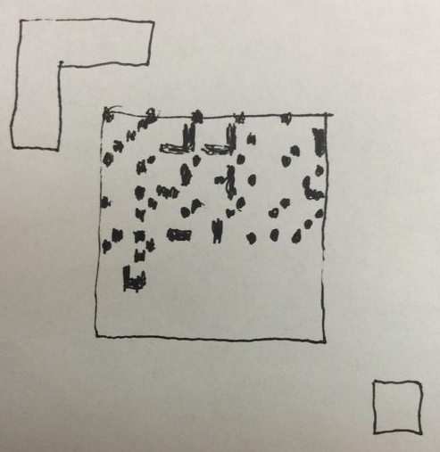
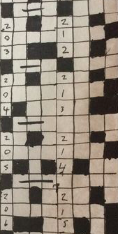
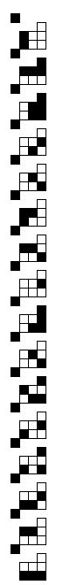
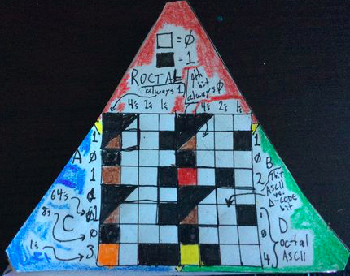
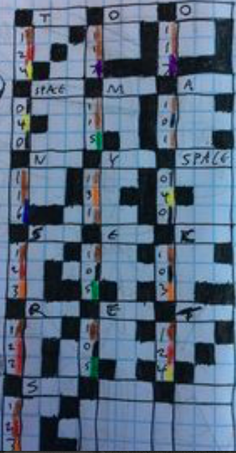

Binary is hard to read for humans, to the point that it's mostly not used at all for human interface anymore. Human language is almost impossible to read for machines, with optical character recognition a whole field even for Western alphabets with a small character set. This has encouraged a culture in computer science of obscuring the operation of the machine and the physical data layer from the human user to the point that we have very little control over it. I belive that much of this obscuring has been intentional by the bandits and scum who seek to prevent users from having control over our own hardware.
To address this problem, I have been working on a system of physical data encoding that has enough geometric structure to be tractable for both humans and machines, making a wide range of applications that were previously not accessible for normal people accessible and making computer technology more robust and usable. I call this system "roctal", for "octal that rocks".
Octal is base 8, and has the advantage over base 10 that it can be easily connected with binary. The heart of roctal is simply arranging physical data bits in such a way that they are easier to understand than simple lines of bits in a row by arranging them in a 3X3 grid as a subset of a 4x4 grid, with a collection of physical metadata that are always included that make it clear how to read and write or edit the data.
To see the problem this is attempting to solve, consider the following thought experiment: you have a piece of some type of hard drive material that you found somewhere and you want to read it. You have all the various microscopes you could possibly want available, including ones that scan magnetic field at high resolution. Can you read the data? In most cases, the answer is initially at least "no". Or at least not without a huge effort of outside research to figure out the format of the data. It's not, in general, self-documenting, or obvious. Contrast this to the clay tablets we have from thousands of years ago that still have very clearly readable markings of what is inside, and of which even a small shard can be read by a scholar who knows the system. Even someone with no background in the language can immediately tell cuneiform from heiroglyphics, and go look up how to read the relevant language, and translate it. The goal of this project is to fix this, to make something that a human can encode just like cuneiform, and in the same way, physically encoded in stone or clay or steel or plastic so that it can be read without fancy magnetic nonsense, and then can be read back thousands of years later without having any outside documentation(the equivalent of a Rosetta Stone in each physical data storage artifact).
I have again used the Processing programming language to implement the computer examples, but have also implemented it physically using ink markers and graph paper. The github code can be found here:
https://github.com/LafeLabs/roctal
That repository is, as of now, mostly useless to people who are not me. However I have documented a bunch of the procedures of Roctal on Instructables, and I will link to them and describe them here. Here is a first introduction, showing how to encode the data using a marker and graph paper:
http://www.instructables.com/id/Encode-a-Message-in-Roctal-Octal-That-Rocks/
Here is a precursor to what became the Roctal system that used colors. I was basing this on a subset of the resistor color code, but in the end found that differentiating colors reliably was much more frustrating than I appreciated immediately. Also using colors breaks the shape-based systems I want to implement that involve simply depressing a dimple into clay or plastic, so I abandoned it: http://www.instructables.com/id/Use-Crayons-to-Share-Data-Between-Digital-Computer/
A key aspect of the roctal system is that I want it to be implemented at different scales within each given physical data artifact. By this I mean that there should be fractal scaling that leads a reader in the future from a set of "guide" characters that are large enough to be totally obvious, say at the centimeter scale, down through mm scale then 100 microns, 10 microns, 1 micron and finally whatever the target scale is. This can make even atomic scale data readable without excessive effort by guiding the future user down the scale from macro to micro directly to the data. There are many ways to do this but one is with a spiral which I describe here:
http://www.instructables.com/id/Roctal-Scaling/
The final instructable that I published previously was to use this system to make a one time pad encryption system to send perfectly secret information, which I used to transmit a latitude and longitude position. In the future of course I would encode position not using high precision lat/lon coordinates but using the system I'll be describing with action geometry and geometron which have fractal precision. But this illustrates how human implementation of the machine code can be used for perfectly secure transmission by implementing a one time pad using 8 sided plastic D&D dice, markers, paper, and a flashlight, then destroying the message using fire and and flushing the ashes down the toilet. This could be used by people to send perfectly secure messages with no access to any trusted computer hardware, which could in some cases be really critical.
Here it is:
http://www.instructables.com/id/Send-Location-With-Perfect-Secrecy/
And here are a bunch of screen shots, showing some examples of both making codes with a computer from the various Processing sketches and making them by hand with graph paper and pen. If I can get apps across platforms for this, it should be able to supplant QR codes but unlike QR codes be human readable, human writeable, and widely useful for many applications, rather than just going to URLs. In short this can be a whole new way of encoding all data at the physical level that makes it more accessible for all. Note that everything I do in Geometron is based on 8 bit bytes for the addresses of the commands, which is intended to be so that all of the Geometron codes can be encoded using the Roctal system, making it easy to physically encode data in a artifact which geometrically describes that artifact. This is thus part of an implementation of what Bruce Sterling has called a "spime". Making all artifacts created by humans into spimes is part of how we can eliminate the money system of value from society in a smooth way.




